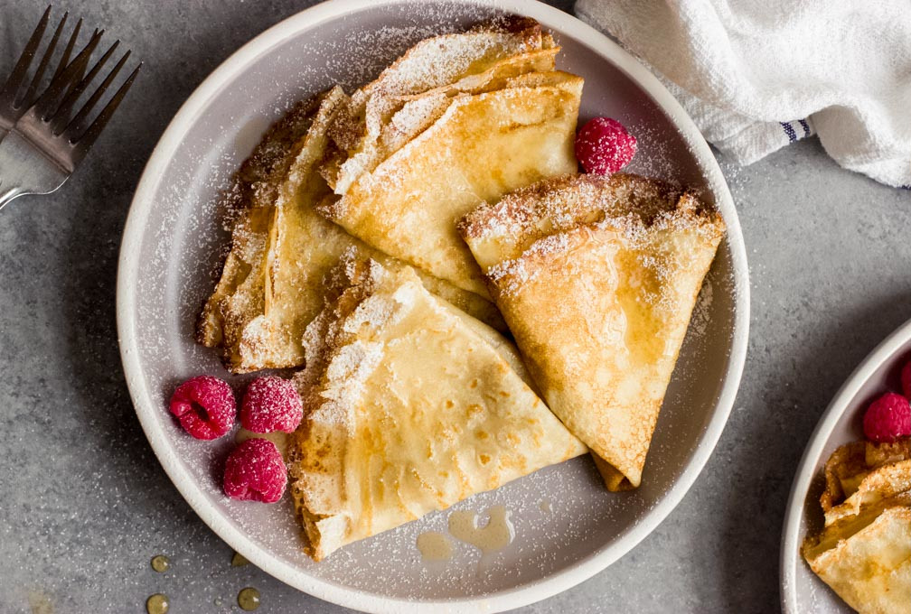

Crepes recipe

A recipe for Blini (Russian Crepes)! These large, thin pancakes are perfect for pairing with a variety of sweet or savory options.
- 2 cups (250 grams) all-purpose flour
- 1 tablespoon (12 grams) granulated sugar
- 1/2 teaspoon salt
- 2 cups (470 milliliters) milk
- 2 large eggs
- 2 tablespoons (30 milliliters) vegetable oil plus more or butter for the pan
- In a large bowl, whisk together the flour, sugar, and salt.
- Slowly whisk in the milk until combined and no lumps remain.
- Whisk in the eggs, followed by the vegetable oil. If too thick, slowly add a little more milk. If too thin, slowly add a little more flour.
- Cover the bowl and allow to rest at room temperature for 15-30 minutes.
- Place a large nonstick skillet or pan over medium low heat. Lightly grease with oil or butter.
- Once thoroughly heated, add 1/4 – 1/3 cup (60-80 milliliters) batter to the center and immediately tilt the pan in a circle to coat the bottom in a thin layer.
- Cook until set on the top and the bottom turns golden, about 2 minutes.
- Flip and cook until the other side is golden, 30 seconds to 1 minute. Remove to plate. Rub the pan with more oil and repeat with remaining batter.
- Serve immediately with sour cream, jam, honey, and/or sweetened condensed milk.
Main page